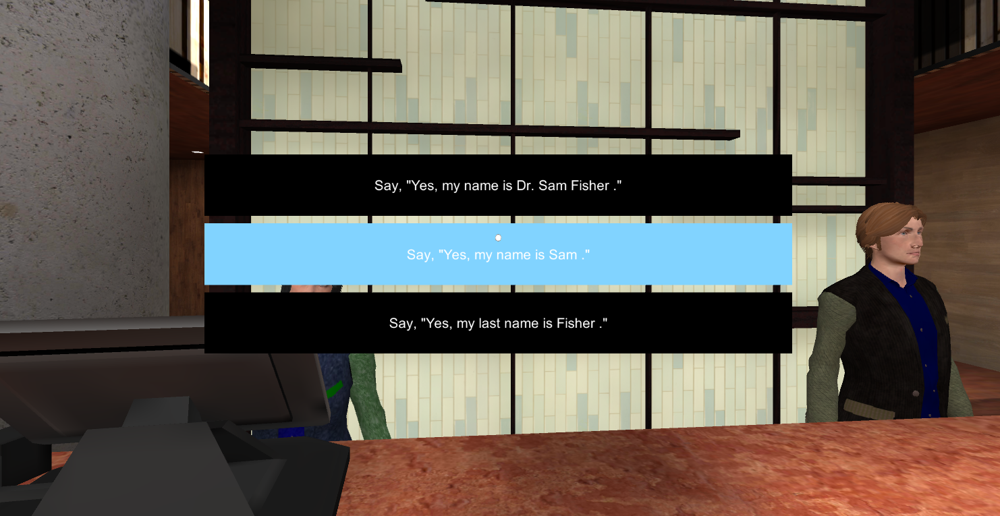

VR Seeking Sierra
- Developed in Unity 5
- For Daydream and OculusGo
- C# scripting
- Blender3D for models and UVMapping
- Almost all non-characters assets are original or by free license
- 2 years development
Proyecto en el que se ha trabajado durante 2 años centrado en su uso en el ámbito académico, principalmente academias.
Consistía en realizar una aplicación de realidad virtual (inicialmente para Daydream, posteriormente incluido su funcionamiento con las OculusGo) funcional en dispositivos móviles centrada en el aprendizaje de idiomas bajo unas características propias. Estas son: El aprendizaje de un idioma, no a través de cursos y lecciones, sino a través de una historia inmersiva e interactiva, que lleva al alumno a lo largo de varias localizaciones dónde tiene que interacturar con varios personajes y el entorno para progresar la historia. Además el "profesor" está inmiscuido con un papel y es el encargado de aportar trasfondo también a la historia.